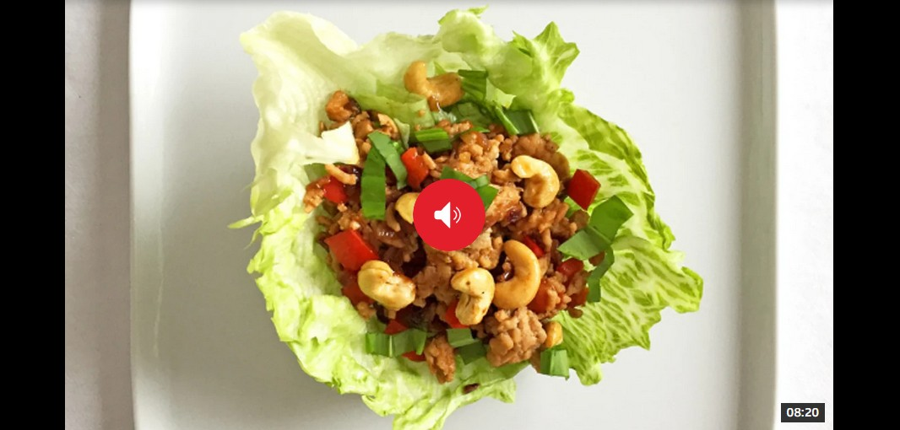

Würziges Poulet Gehacktes auf Salat

Zutaten:
- 400 g Poulet-Hackfleisch
- 1–2 Eisbergsalate, je nach Grösse
- rote Paprika, fein gewürfelt
- mittelgrosse rote Zwiebel, fein geschnitten
- Knoblauchzehe, fein gehackt
- 100 g Cashewnüsse
- 4 EL Sojasauce
- 2 TL Yuzu-Saft (evt. Limette als Ersatz)
- 1 Bund frischer Koriander, die Blättchen gezupft
- Scharfe Chili zum Würzen nach Geschmack
- Pflanzenöl zum Kochen
Zubereitung:
- Den Salatansatz abschneiden und die vier äusseren Blätter des Eisbergsalats vorsichtig vom Salatkopf lösen. Sie dürfen dabei nicht zerbrechen. Den Rest des Salats in feine Streifen schneiden. Alles in kaltem Wasser waschen und gut abschütteln.
- Die Cashewnüsse in einer beschichteten Pfanne rösten, bis sie leicht gebräunt sind. Aus der Pfanne nehmen und beiseitestellen.
- In derselben Pfanne die Zwiebel sowie den Knoblauch in etwas Pflanzenöl 2–3 Minuten andünsten. Das Poulet-Hackfleisch hinzugeben und unter ständigem Rühren anbraten, bis es fast gar ist. Das dauert etwa zehn Minuten. Die Sojasauce hinzufügen und nach Gusto mit Chili würzen.
- Die gewürfelte Paprika und die Cashewnüsse dazugeben und unter stetigem Rühren weitere 4 Minuten anbraten.
- Den Yuzu-Saft untermischen. Die Sauce allenfalls mit mehr Sojasauce oder Yuzu-Saft abschmecken.
- Das Poulet-Hackfleisch etwas abkühlen lassen und lauwarm in Salatblättern anrichten. Dabei je ein ganzes Salat-Blatt auf den Teller legen und zuerst mit etwas vom geschnittenen Salat füllen. Das würzige Poulet-Hackfleisch dann auf den Salat geben.
- Mit frischen Korianderblättchen bestreuen und servieren.